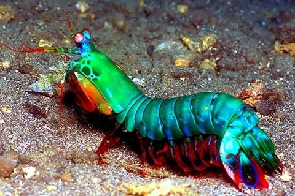
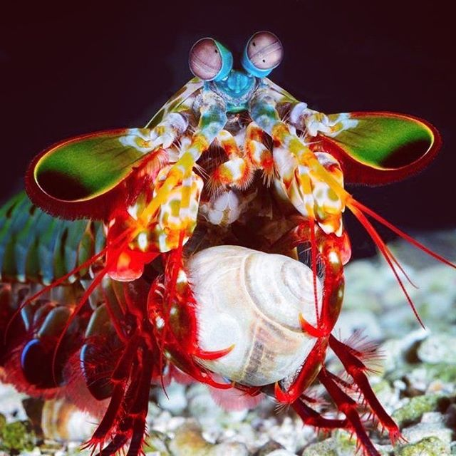
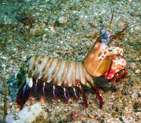
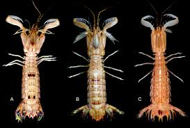

Fatos sobre o Stomatopoda
Fatos gerais
Seu nome científico é Odontodactylus scyllarus.

| Reino | Animalia |
| Filo | Arthropoda |
| Subfilo | Crustacea |
| Classe | Malacostraca |
| Subclasse | Hoplocarida |
| Ordem | Stomatopoda |
Como é conhecido no Brasil
Stomatopoda (ou estomatópode), chamados popularmente de tamarutacas ou delacraias-do-mar no Brasil, é uma ordem de crustáceos marinhos da subclasse Hoplocarida, que agrupa cerca de 400 espécies, caracterizadas principalmente pelamorfologia da segunda pata torácica, que é modificada em apêndice subquelado, lembrando uma pata de louva-a-deus.
O alcance de seus olhos
Diferente de nós, humanos, que possuímos 3 cones sensíveis a luz, e das borboletas, que em termos de visão se encontram quase no topo da cadeia "ocular",pois possuem cinco cones (2 dos quais nós humanos não conseguimos se quer processar o valor); o sistema de visão dos Stomatopodas possui doze cones sensíveis à luz e outros quatro que filtram a luz (16 cones no total). Talvez muito certamente seja devido a esse fato que eles sejam tão gloriosos de se olhar.
Nem tudo são flores
Sendo uma criatura que perceba e seja de tamanha beleza, poderíamos imaginar que esta lacraia-do-mar se portaria como uma santo subaquático, nadando lindamente, cumprimentando lagostas e abençoando bebês. No entanto isso não poderia estar maislonge da verdade. O fato é que o Stomatopoda é um
Anatomia Corporal
De acordo com a anatomia da sua pata raptorial é possível distinguir entre dois grupos funcionais, as perfuradoras (spearers) ou as esmagadoras (smashers), sendo que cada um dos tipos apresenta sua própria variação comportamental e até mesmo de habitat.
As maiores esmagadoras, tais como exemplares de Odontodactylus scyllarus, são capazes de desferir um dos mais rápidos e violentos golpes do reino animal, um soco que pode apresentar a velocidade de um tiro calibre .22 (equivalente a 720km/h) e uma força de impacto de 60 kg/cm². Essa força esmagadora é a responsável pelo seutítulo de "lagosta-boxeadora" e é capaz de facilmente quebrar a carapaça de umcaranguejo, as conchas duras e calcificadas de gastrópodes ou até mesmo quebrar ovidro reforçado de um aquário.